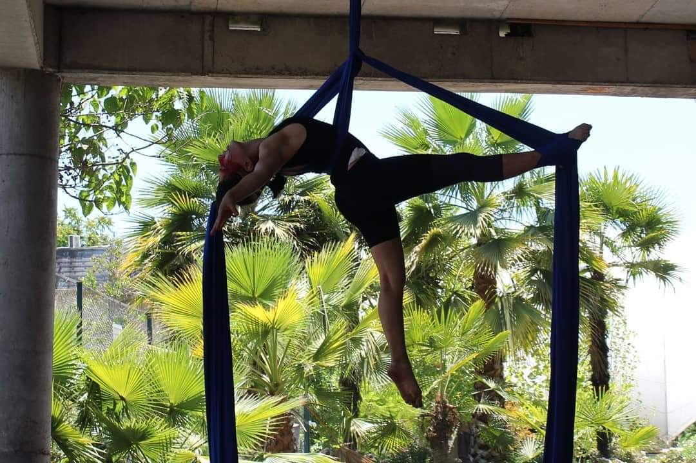
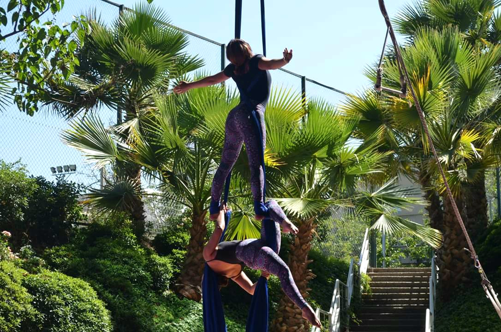
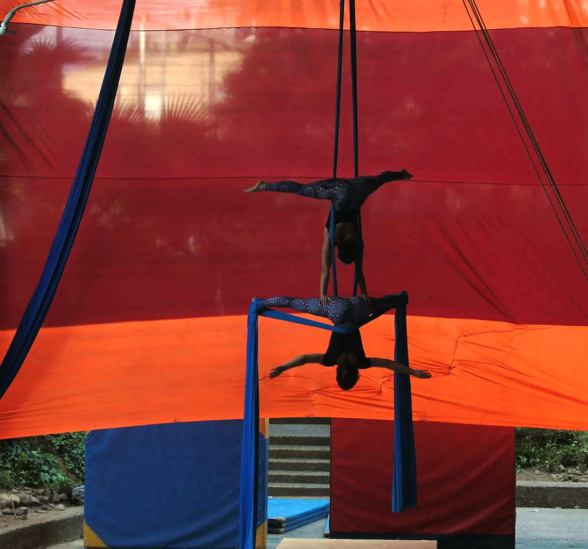

galería





Artista escénica enfocada en el trabajo corporal, la presencia y la exploración de los límites. Dedicada a la interpretración y la creación. Nací en 1997 en el sur de Chile pero siempre he sido de Santiago la capital. A los 20 años recién conocí el lenguaje corporal del circo desde entonces he desarrollado un camino de manera independiente para el aprendizaje de la disciplina. Mis raíces las honro y me abro a la posibilidad de la vida cambiante. En 2021 me inicié en la danza contemporánea donde conocí la improvisación y el trabajo de piso. En 2023 empezé mi formación en danza contemporánea donde estuve dos años estudiando de manera vespertina en el Centro de Danza Espiral en el Programa de Introducción a la danza. En 2025, ya me dedicaba completamente a formamer en circo donde cursé la Escuela Preparatoria de las Artes Circenses con más de 900 hrs. de estudios. Realicé una residencia en Circo Los Nadie donde pudimos llevar a cabo un proceso en donde presentamos en el Centro de las Artes Aéreas en Circo Balance. Sigo trabajando de manera solista y en compañia de Cía. Punto Muerto
Investigación escénica en torno al tiempo, la repetición y el desgaste del cuerpo con el paso del tiempo
Investigación escénica en torno al tiempo, la repetición y el desgaste del cuerpo con el paso del tiempo
Espacio de exploración física colectiva centrado en la improvisación y la relación entre cuerpos.



Instagram: @pau.mp4_
Mail: paulazuniga.irigoin@gmail.com